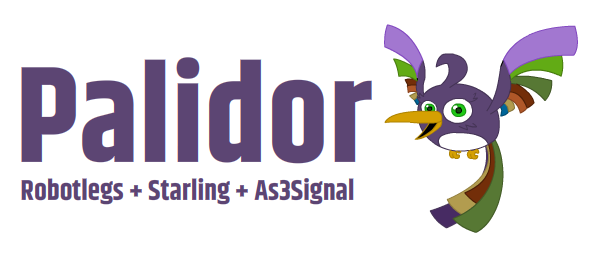

Palidor Bundle
- StarlingIntegration
- StarlingContextView
- StarlingViewMap
- StarlingMediator
- StarlingViewManager
- StarlingCommandMap
- FlowManager
- SignalCommandMap
- KeyCommandMap
- KeyDispatcher
Dependencies
Setup
const robotlegsContext:IContext = new Context();
robotlegsContext.install( PalidorBundle );
robotlegsContext.configure( YourConfig, starling, new ContextView( this ) );
IConfig Example
public class YourConfig implements IConfig
{
[Inject]
public var eventDispatcher:EventDispatcher; //starling.events.EventDispatcher
[Inject]
public var mediatorMap:IMediatorMap;
[Inject]
public var context:IContext;
[Inject]
public var flowManager:IFlowManager;
[Inject]
public var commandMap:IStarlingCommandMap;
public function configure():void
{
context.afterInitializing( initialize );
}
private function initialize():void
{
commandMap.map( CustomEvent.COMMAND_01 ).toCommand( FirstCommand );
commandMap.map( CustomEvent.COMMAND_02 ).toCommand( SecondCommand );
mediatorMap.map( FirstView ).toMediator( FirstViewMediator );
mediatorMap.map( FirstFloatingView ).toMediator( FirstFloatingViewMediator );
flowManager.map( CustomEvent.SHOW_FIRST_VIEW ).toView( FirstView );
flowManager.map( CustomEvent.SHOW_FIRST_FLOATING_VIEW ).toFloatingView( FirstFloatingView );
eventDispatcher.dispatchEventWith( CustomEvent.SHOW_FIRST_VIEW );
}
}Starling Mediator
Mapping
mediatorMap.map( FirstView ).toMediator( FirstViewMediator );
Mediator Architecture
public class FirstViewMediator extends StarlingMediator
{
[Inject]
public var view:FirstView;
override public function initialize():void
{
// view added on Stage
}
override public function destroy():void
{
// view removed from Stage
}
}EventMap
eventMap.mapListener( view, Event.COMPLETE, handler );
eventMap.mapListener( view.button, Event.TRIGGERED, handler );
eventMap.mapListener( eventDispatcher, Event.COMPLETE, handler);
Command Pattern
- StarlingCommandMap
- SignalCommandMap
- KeyCommandMap
Mapping
[Inject]
public var starlingCommandMap:IStarlingCommandMap;
[Inject]
public var signalCommandMap:ISignalCommandMap;
[Inject]
public var keyCommandMap:IKeyCommandMap;
private function initialize():void
{
starlingCommandMap.map( CustomEvent.COMMAND_01 ).toCommand( FirstCommand );
signalCommandMap.map( CustomSignal ).toCommand( FirstCommand );
keyCommandMap.map( "command01" ).toCommand( FirstCommand );
}Command Architecture
import robotlegs.bender.bundles.mvcs.Command;
import starling.events.EventDispatcher;
public class FirstCommand extends Command
{
[Inject]
public var eventDispatcher:EventDispatcher;
override public function execute():void
{
//your command
}
}Calling a Command
[Inject]
public var eventDispatcherEventDispatcher; //starling.events.EventDispatcher
[Inject]
public var customSignal:CustomSignal; //your custom signal
[Inject]
public var keyDispatcher:IKeyDispatcher;
private function initialize():void
{
eventDispatcher.dispatchEventWith( CustomEvent.COMMAND_01 );
customSignal.dispatch();
keyCommandMap.dispatch( "command01" );
}View Manager and Flow Manager
Mapping
flowManager.map( CustomEvent.SHOW_FIRST_VIEW ).toView( FirstView );
flowManager.map( CustomEvent.SHOW_FIRST_FLOATING_VIEW ).toFloatingView( FirstFloatingView );
Adding a new View
eventDispatcher.dispatchEventWith( CustomEvent.SHOW_FIRST_VIEW );